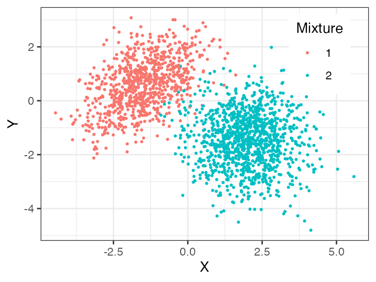
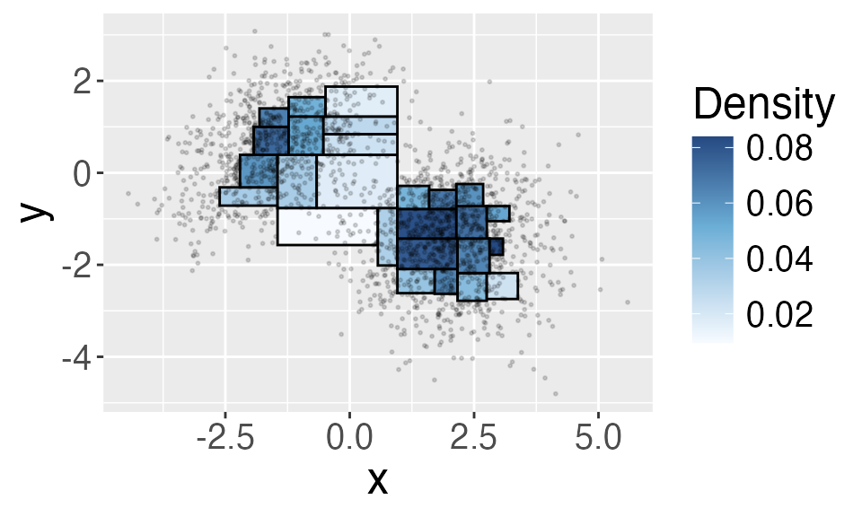
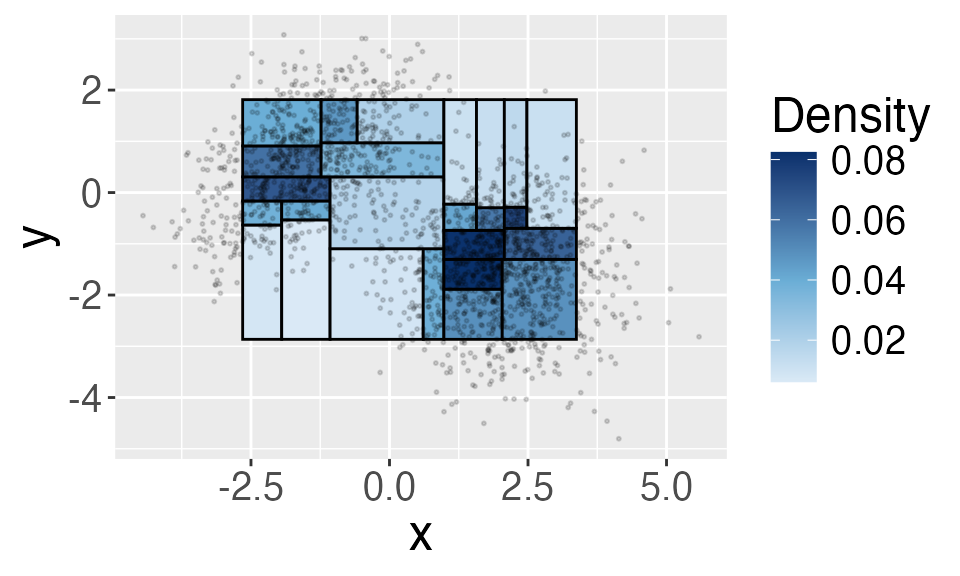

Creating a Beta Tree Histogram
beta_trees.RmdFirst introduced by Pearson in 1895, the histogram is one of the basic tools for summarizing and visualizing data. In order to construct a histogram for univariate data, one first defines a set of “bins” (i.e., intervals), and then counts the number of observations within each bin. We can do the same for two- or higher- dimensional data. However, as the dimension increases, creating a histogram becomes challenging because of the curse of dimensionality. In essence, if we use the same number of bins in each dimension, then in order to have the same number of observations per bin as in the univariate setting, the sample size needs to increase exponentially with the dimension.
The Beta-tree histogram circumvents the curse of dimensionality by adapting the histogram to the data. Instead of predefining the locations of the bins, the Beta-tree histogram recursively partitions the space according to the marginal order statistics. The Beta-tree histogram has three properties:
It adapts to where observations are located.
It provides simultaneous confidence intervals for the probability mass in each bin of the histogram.
It summarizes data succinctly by choosing the largest bins such that data are close to uniform in each bin.
The simultaneous confidence intervals (CI) created by the Beta-tree histogram also allow us to perform various data-analytic tasks, such as identifying modes in the underlying density. This is described in the note “Identifying modes using a Beta-tree histogram”.
This document demonstrates how to use functions in the package to create a Beta-tree histogram using data from of a mixture of 2-dimensional Gaussian distributions.
Example: Creating a Beta-tree histogram for 2-dim Gaussian data
As an illustration, we create a Beta-tree histogram for a mixture of two-dimensional Gaussian data ( 2000) sampled from the following distribution and visualized below:

We use the BuildHist() function to create a Beta-tree
histogram. (If plot = T, then the function plots the
Beta-tree histogram if the data are two-dimensional. )
hist <- BuildHist(X, alpha = 0.1, method = "weighted_bonferroni", plot = T)
Besides the data matrix X, we input two parameters: the
significance level alpha = 0.1 and a multiple testing
correction method method = "weighted_bonferroni". This
means that the confidence intervals that the histogram provides are
simultaneously valid for every region (i.e. bin) at confidence level
1-alpha = 0.9. The return value of the
BuildHist is a matrix describing each region in the
Beta-tree histogram. Each row represents one region, and this histogram
includes 26 regions. Let’s look at the first region in the
histogram:
hist[1,]
#> [1] -2.61449293 -0.71307863 -1.45076293 -0.31525842 0.03456057 0.01762324
#> [7] 0.05868752 31.00000000 6.00000000The columns provide the following information:
the first two columns are the lower bounds in and -coordinates for this region; the next two columns are the upper bounds in and -coordinates for this region, i.e., this rectangle is defined by the bounds [ -2.61 -1.45 ] *[ -0.71 -0.32 ]. If the data have a higher dimension, then there would be correspondingly more columns.
the fifth column stores the empirical density for this region
the sixth and seventh columns store the lower and upper confidence bound (CI) of the average probability density in the region. With probability at least , the CIs cover the average densities in all of the regions.
the eighth column stores the number of observations in this region
the last column stores the depth of the region in the k-d tree, which we will describe in the next section.
The histogram above does not have a rectangular boundary. As we will
explain in the next few sections, this is because the histogram only
includes bounded regions. Alternatively, you can
initialize a bounding box for the histogram if you specify
bounded = T. You will then need to provide two additional
parameters option and q (which we will explain
in the next section). Below, we initialize the bounding box at the 0.05
and 0.95 quantiles in each dimension.
hist <- BuildHist(X, alpha = 0.1, method = "weighted_bonferroni", bounded = T,
option = "qt", q=c(0.05,0.05),
plot = TRUE)
In the next section, we will describe how the Beta-tree histogram is constructed.
How a Beta-tree histogram is constructed
The Beta tree histogram is constructed in four steps:
- Building a k-d tree.
- Calculating confidence levels for every region.
- Setting confidence bounds.
- Select regions that pass a goodness-of-fit test.
You can think of the algorithm as taking two passes: a top-down pass partitioning the sample space into small regions and a bottom-up pass selecting largest regions in which the observations are approximately uniform.
Building a k-d tree
The construction of the Beta-tree histogram starts by iteratively partitioning the sample space along the marginal sample medians. This is motivated by k-d trees, which is a spatial-partitioning data structure for organizing observations in a k-dimensional space.
In detail, we start with all of the observations (this is the root node). At each step, we choose (1) an axis along which to partition and (2) a location for partitioning. For (1), we iterate through all of the coordinates, i.e., the first partition is along -axis and the second partition is along the -axis etc. As to (2), we partition along the sample median in the partitioning coordinate.
In the two-dimensional example above, in the first partition, we split the sample space into two half-spaces: Note that the observations at the sample median are not included in any of the two regions. In the second step, we split and respectively. is split into two children where is the order statistic in the -coordinate for the observations in (the total number of observations in is ). We continue splitting a region until the number of observations inside is less than , where is the total number of observations.
The function BuildKDTree constructs a k-d tree.
tree <- BuildKDTree(X, bounded = F)The tree object has two components: kdtree
and nd. The object kdtree stores the root node
of k-d tree as a list (you can refer to the function documentation for
more detail). We point out here that leftchild and
rightchild point to the two partitions of that region,
low ad up are the lower and upper bounds of
the region and ndat is the number of observations. The
following is one node in the tree:
tree$kdtree$leftchild$leftchild$rightchild$rightchild$leftchild$leftchild
#> $leftchild
#> NULL
#>
#> $rightchild
#> NULL
#>
#> $ndat
#> [1] 30
#>
#> $depth
#> [1] 6
#>
#> $low
#> [1] -1.4507629 -0.7649166
#>
#> $up
#> [1] -0.6637458 -0.0331637
#>
#> $lower
#> NULL
#>
#> $upper
#> NULL
#>
#> $bounded
#> [1] 1
#>
#> $leaf
#> [1] TRUEnd contains the number of bounded regions at
depth
of the tree (the root node has depth = 0). This is useful when we adjust
the confidence levels at each depth to account for multiple CI. Here, at
depth 4 there are 4 bounded regions.
tree$nd
#> [1] 0 0 0 0 4 12 36 21As you can see, there are no bounded regions in the first 4 levels.
You can initialize a bounding box with the option
bounded = T . This restricts the histogram construction to
the data inside the bounding box. We provide two options to specify the
bounding box:
- If
option = 'qt', then we set the bounds at the sample quantiles. For example, ifq = c(0.05, 0.05), then we construct the bounding box as follows: The vertical boundaries of are given by the 0.05 and 0.95 quantiles of the data in the x-coordinate. Denote the data that fall strictly between these vertical boundaries by . The horizontal boundaries of are given by the 0.05 and 0.95 quantiles of in the y coordinate. The root node is the interior of this bounding box.
- If
option = 'ndat', then we specify the number of observations rather than the quantiles. For example, ifq = c(25, 25), then the vertical boundaries of have x-coordinates equal to the 25th smallest and 25th largest x-coordinates of the data .
Calculating confidence levels for every region
We are able to construct exact CI for the probability content of every region because the probability of a region satisfies
where is the number of observations in and is the total number of observations. With this result, we can construct a confidence interval for the average density , where denotes the volume of :
If we want to simultaneously cover all the regions at level , then we can redefine the significance level for each region such that the total probability of mis-coverage is at most . For example, we can use a weighted Bonferroni adjustment: We assign the same level for every bounded region at the same tree depth, and this significance level for regions at tree depth is defined as ,
Here, is the maximum depth of the k-d tree, is the smallest depth (greater than 0) at which there are bounded regions, is the number of bounded regions at depth , and the factor ensures that adds up to .
The function ConfLevel computes
for each depth
and for a given overall level
.
For example, the following code computes
when
.
You can also use an unweighted Bonferroni adjustment by setting
method = 'bonferroni'. The unweighted Bonferroni adjustment
gives equal weight to each tree depth, and then equal weight to all
bounded regions at the same tree depth.
ahat <- ConfLevel(tree$nd, alpha = 0.1, method = "weighted_bonferroni")
ahat
#> [1] 0.0000000000 0.0000000000 0.0000000000 0.0000000000 0.0038961039
#> [6] 0.0016233766 0.0007215007 0.0018552876Setting confidence bounds
Once we define the confidence levels, we compute simultaneous confidence intervals for the average densities as
In order to construct the Beta-tree histogram, we will use a bottom-up pass to select the largest regions for which we are confident that the observations inside are from a uniform distribution. We implement this idea by picking the largest whose empirical density falls inside the CIs of all of its children. These intersection bounds can be computed recursively as
$$ \mathrm{lower}(R_k) = \max\left(\frac{\mathrm{qBeta}(\frac{\hat{\alpha}_D}{2}, n_k + 1, n-n_k)}{|R_k|}, \mathrm{lower}(\text{1st child}), \mathrm{lower}(\text{2nd child})\right)\\ \mathrm{upper}(R_k) = \min\left(\frac{\mathrm{qBeta}(1-\frac{\hat{\alpha}_D}{2}, n_k + 1, n-n_k)}{|R_k|}, \mathrm{upper}(\text{1st child}), \mathrm{upper}(\text{2nd child})\right) $$
The function SetBounds computes these bounds. Let’s
compare to the same node in the k-d tree as before. Whereas the
lower and upper levels were empty before, the
two values are now filled in.
tree <- SetBounds(tree$kdtree, ahat, n)
tree$leftchild$leftchild$rightchild$rightchild$leftchild$leftchild
#> $leftchild
#> NULL
#>
#> $rightchild
#> NULL
#>
#> $ndat
#> [1] 30
#>
#> $depth
#> [1] 6
#>
#> $low
#> [1] -1.4507629 -0.7649166
#>
#> $up
#> [1] -0.6637458 -0.0331637
#>
#> $lower
#> [1] 0.0135554
#>
#> $upper
#> [1] 0.04605867
#>
#> $bounded
#> [1] 1
#>
#> $leaf
#> [1] TRUESelecting regions to form the Beta tree histogram
The function SelectNodes selects the largest regions
(w.r.t inclusion) such that the empirical density
falls inside the interval
.
B <- matrix(nrow = 0, ncol = (2*d + 5))
hist <- SelectNodes(tree, B, ahat, n)Each row in the hist matrix represents one region in the
Beta-tree histogram. The matrix contains
columns. The first
columns store the lower (first
columns) and upper bounds of the region. The
column stores the empirical density
and the next two columns store the confidence interval of
as defined in the previous section:
The last two columns store the number of observations inside the
region and its tree depth. The function BuildHist returns
hist.